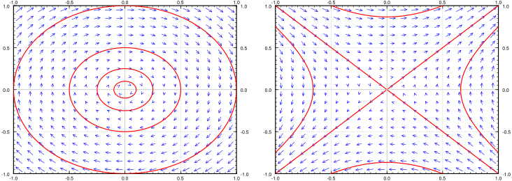

Except for a few brief detours in Chapter 1, we considered mostly linear equations. Linear equations suffice in many applications, but in reality most phenomena require nonlinear equations. Nonlinear equations, however, are notoriously more difficult to understand than linear ones, and many strange new phenomena appear when we allow our equations to be nonlinear. Not to worry, we did not waste all this time studying linear equations. Nonlinear equations can often be approximated by linear ones if we only need a solution “locally”—only for a short period of time or only for certain parameters. Understanding linear equations can also give us qualitative understanding about a more general nonlinear problem. The idea is similar to what you did in calculus in trying to approximate a function by a line with the right slope.
In Section 2.4 we looked at the pendulum of length \(L\text{.}\) The goal was to solve for the angle \(\theta(t)\) as a function of the time \(t\text{.}\) The equation for the setup is the nonlinear equation
While the solution to the linear equation is not exactly what we were looking for, it is rather close to the original, as long as the angle \(\theta\) is small and the time period involved is short.
You might ask: Why don’t we just solve the nonlinear problem? Well, it might be very difficult, impractical, or impossible to solve analytically, depending on the equation in question. We may not even be interested in the actual solution, we might only be interested in some qualitative idea of what the solution is doing. For example, what happens as time goes to infinity?
where \(f(x,y)\) and \(g(x,y)\) are functions of two variables, and the derivatives are taken with respect to time \(t\text{.}\) Solutions are functions \(x(t)\) and \(y(t)\) such that
The way we will analyze the system is very similar to Section 1.6, where we studied a single autonomous equation. The ideas in two dimensions are the same, but the behavior can be far more complicated.
It may be best to think of the system of equations as the single vector equation
\begin{equation}
\begin{bmatrix} x \\ y \end{bmatrix} ' =
\begin{bmatrix} f(x,y) \\ g(x,y) \end{bmatrix} .\tag{8.1}
\end{equation}
As in Section 3.1, we draw the phase portrait (or phase diagram), where each point \((x,y)\) corresponds to a specific state of the system. We draw the vector field given at each point \((x,y)\) by the vector \(\left[ \begin{smallmatrix} f(x,y) \\ g(x,y) \end{smallmatrix} \right]\text{.}\) And as before if we find solutions, we draw the trajectories by plotting all points \(\bigl(x(t),y(t)\bigr)\) for a certain range of \(t\text{.}\)
From the phase portrait it should be clear that even this simple system has fairly complicated behavior. Some trajectories keep oscillating around the origin, and some go off towards infinity. We will return to this example often, and analyze it completely in this (and the next) section.
If we zoom into the diagram near a point where \(\left[ \begin{smallmatrix} f(x,y) \\ g(x,y) \end{smallmatrix} \right]\) is not zero, then nearby the arrows point generally in essentially that same direction and have essentially the same magnitude. In other words the behavior is not that interesting near such a point. We are of course assuming that \(f(x,y)\) and \(g(x,y)\) are continuous.
Let us concentrate on those points in the phase diagram above where the trajectories seem to start, end, or go around. We see two such points: \((0,0)\) and \((1,0)\text{.}\) The trajectories seem to go around the point \((0,0)\text{,}\) and they seem to either go in or out of the point \((1,0)\text{.}\) These points are precisely those points where the derivatives of both \(x\) and \(y\) are zero. Let us define the critical points as the points \((x,y)\) such that
The critical points are where the behavior of the system is in some sense the most complicated. If \(\left[ \begin{smallmatrix} f(x,y) \\ g(x,y) \end{smallmatrix} \right]\) is zero, then nearby, the vector can point in any direction whatsoever. Also, the trajectories are either going towards, away from, or around these points, so if we are looking for long-term qualitative behavior of the system, we should look at what is happening near the critical points.
Critical points are also sometimes called equilibria, since we have so-called equilibrium solutions at critical points. If \((x_0,y_0)\) is a critical point, then we have the solutions
In Section 3.5 we studied the behavior of a homogeneous linear system of two equations near a critical point. For a linear system of two variables given by an invertible matrix, the only critical point is the origin \((0,0)\text{.}\) Let us put the understanding we gained in that section to good use understanding what happens near critical points of nonlinear systems.
In calculus we learned to estimate a function by taking its derivative and linearizing. We work similarly with nonlinear systems of ODEs. Suppose \((x_0,y_0)\) is a critical point. First change variables to \((u,v)\text{,}\) so that \((u,v)=(0,0)\) corresponds to \((x_0,y_0)\text{.}\) That is,
Next we need to find the derivative. In multivariable calculus you may have seen that the several variables version of the derivative is the Jacobian matrix 1
This matrix gives the best linear approximation as \(u\) and \(v\) (and therefore \(x\) and \(y\)) vary. We define the linearization of the equation (8.1) as the linear system
\begin{equation}
\begin{bmatrix} u \\ v \end{bmatrix} ' =
\begin{bmatrix}
\frac{\partial f}{\partial x}(x_0,y_0) &
\frac{\partial f}{\partial y}(x_0,y_0) \\
\frac{\partial g}{\partial x}(x_0,y_0) &
\frac{\partial g}{\partial y}(x_0,y_0)
\end{bmatrix}
\begin{bmatrix} u \\ v \end{bmatrix} .
\end{equation}
Let us keep with the same equations as Example 8.1.1: \(x' = y\text{,}\)\(y' = -x+x^2\text{.}\) There are two critical points, \((0,0)\) and \((1,0)\text{.}\) The Jacobian matrix at any point is
At the point \((1,0)\text{,}\) the Jacobian matrix is \(\left[ \begin{smallmatrix}
0 & 1 \\
1 & 0
\end{smallmatrix} \right]\text{,}\) and our new variables are \(u=x-1\) and \(v=y\text{.}\) The linearization at \((1,0)\) is
\begin{equation}
\begin{bmatrix} u \\ v \end{bmatrix} ' =
\begin{bmatrix}
0 & 1 \\
1 & 0
\end{bmatrix}
\begin{bmatrix} u \\ v \end{bmatrix} .
\end{equation}
The phase diagrams of the two linearizations at the critical points \((0,0)\) and \((1,0)\) are given in Figure 8.2. Note that the variables are now \(u\) and \(v\text{,}\) which are different at each critical point. Compare Figure 8.2 with Figure 8.1, and look especially at the behavior near the critical points.
Figure8.2.Phase diagram with some trajectories of linearizations at the critical points \((0,0)\) (left) and \((1,0)\) (right) of \(x' = y\text{,}\)\(y' = -x+x^2\text{.}\)
\(x'=ax+by+f(x,y)\text{,}\)\(y'=cx+dy+g(x,y)\text{,}\) where \(f(0,0) = 0\text{,}\)\(g(0,0) = 0\text{,}\) and all first partial derivatives of \(f\) and \(g\) are also zero at \((0,0)\text{,}\) that is, \(\frac{\partial f}{\partial x}(0,0) =
\frac{\partial f}{\partial y}(0,0) =
\frac{\partial g}{\partial x}(0,0) =
\frac{\partial g}{\partial y}(0,0) = 0\text{.}\)
a) Critical points \((1,0)\) and \((1,1)\text{.}\) At \((1,0)\) using \(u=x-1\text{,}\)\(v=y\) the linearization is \(u'=\pi v\text{,}\)\(v'=-v\text{.}\) At \((1,1)\) using \(u=x-1\text{,}\)\(v=y-1\) the linearization is \(u'=-\pi v\text{,}\)\(v'=v\text{.}\) b) Critical points \((0,0)\) and \((0,-1)\text{.}\) Using \(u=x\text{,}\)\(v=y\) the linearization is \(u'=u+v\text{,}\)\(v'=u\text{.}\) At \((0,0)\) using \(u=x\text{,}\)\(v=y\) the linearization is \(u'=u+v\text{,}\)\(v'=u\text{.}\) At \((0,-1)\) using \(u=x\text{,}\)\(v=y+1\) the linearization is \(u'=u-v\text{,}\)\(v'=u\text{.}\) c) Critical point \((\nicefrac{1}{2},\nicefrac{-1}{4})\text{.}\) Using \(u=x-\nicefrac{1}{2}\text{,}\)\(v=y+\nicefrac{1}{4}\) the linearization is \(u'=-u+v\text{,}\)\(v'=u+v\text{.}\)
The idea of critical points and linearization works in higher dimensions as well. You simply make the Jacobian matrix bigger by adding more functions and more variables. For the following system of 3 equations find the critical points and their linearizations:
Critical points are \((0,0,0)\text{,}\) and \((-1, 1, -1)\text{.}\) The linearization at the origin using variables \(u=x\text{,}\)\(v=y\text{,}\)\(w=z\) is \(u' = u\text{,}\)\(v'=-v\text{,}\)\(z' = w\text{.}\) The linearization at the point \((-1,1,-1)\) using variables \(u=x+1\text{,}\)\(v=y-1\text{,}\)\(w=z+1\) is \(u'=u-2w\text{,}\)\(v'=-v-2w\text{,}\)\(w'=w-2u\text{.}\)
Any two-dimensional non-autonomous system \(x'=f(x,y,t)\text{,}\)\(y'=g(x,y,t)\) can be written as a three-dimensional autonomous system (three equations). Write down this autonomous system using the variables \(u\text{,}\)\(v\text{,}\)\(w\text{.}\)